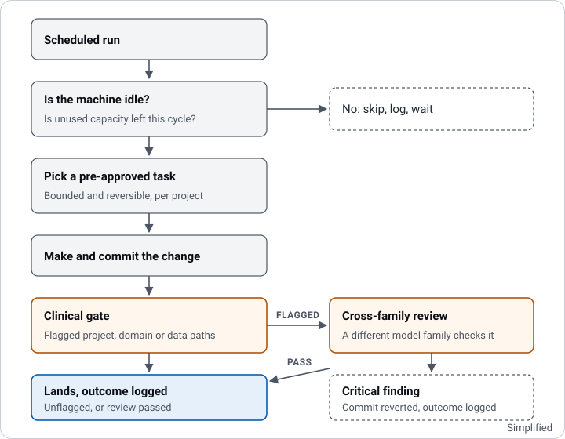

budget-dispatcher
A task runner that turns unused automated coding capacity into bounded, reversible, pre-approved work, with a gate that will not let an unreviewed change to clinical logic land.
The problem
I had automated coding capacity going unused overnight, and no safe way to point it at real work without risking the parts of my projects that should never change unattended. Clinical calculation code is the obvious example.
What I built
A scheduled runner that works across several of my projects. Its distinguishing feature is a safety gate: any automated change touching clinical domain logic gets an independent review from a different model family before it can land, and a critical finding reverts the commit rather than warning about it.
How it works

Node.js running a phased pipeline on a schedule. A run first checks that the machine is idle and that unused capacity remains, then picks a pre-approved task. Projects are flagged for clinical gating individually, and a flagged project routes any change under its domain or data directories to a cross-family review step.
The gate fails closed: a critical finding reverts the commit and logs the outcome, rather than leaving a warning for someone to notice later.
Where it stands
In daily use across my own projects. The source is private.